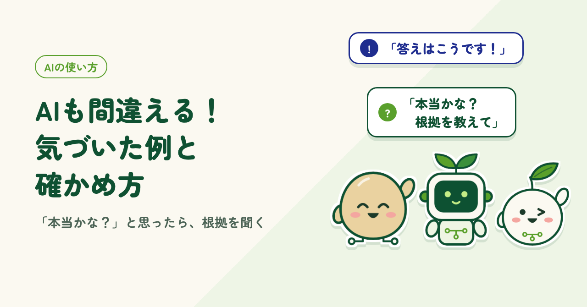
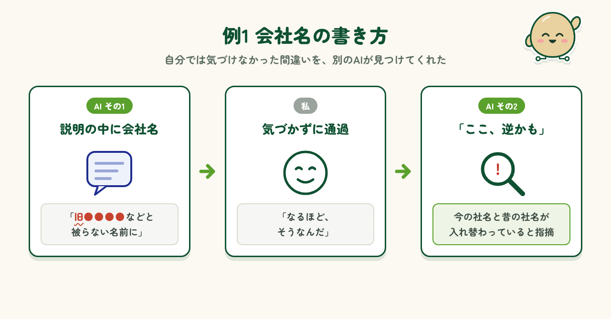
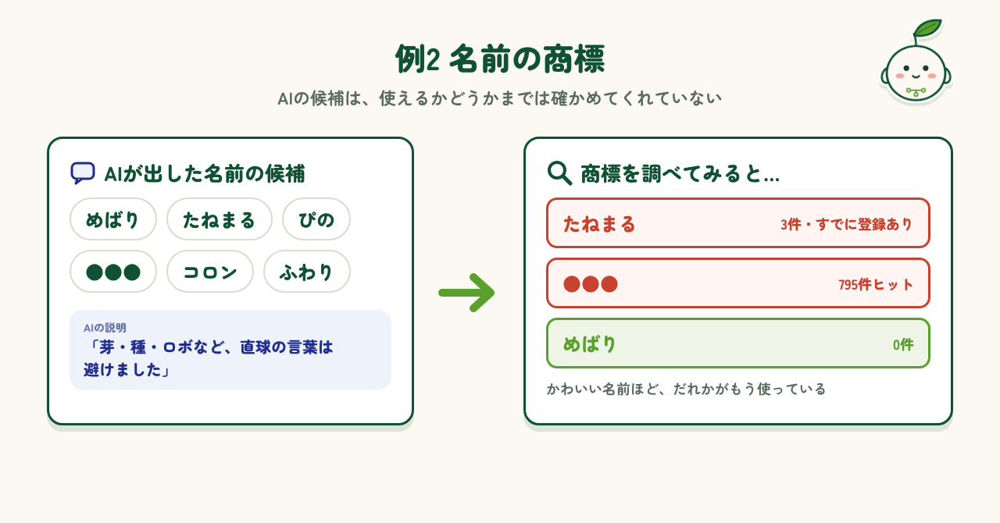
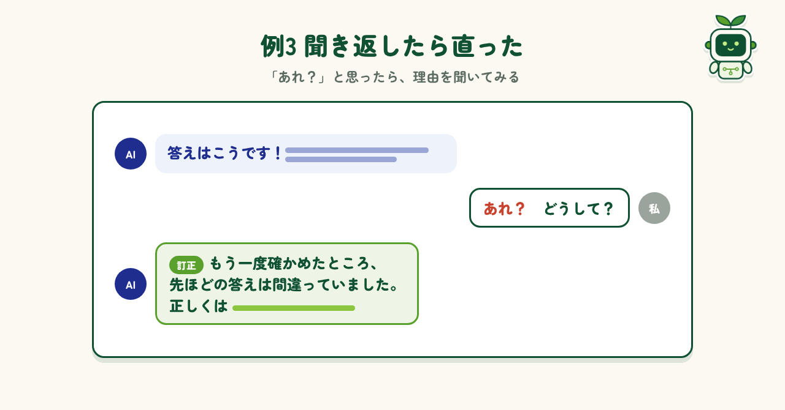
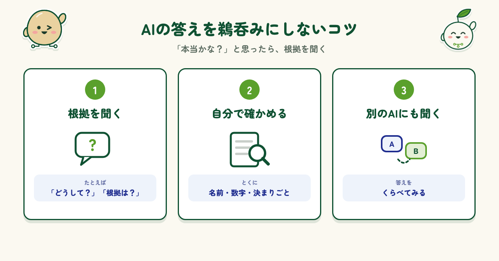

はじめに
AIに質問すると、すらすらと自信ありげな答えが返ってきます。言い切ってくれるので、つい「そうなんだ」と信じてしまいがちです。でも、AIを使っているうちに、もっともらしい顔をして間違えることがあると気づきました。しかも、間違いはぱっと見ではわかりにくいのが困ったところです。この記事では、私が実際に出会った「AIの間違い」を3つの例で紹介し、どうやって気づいたか、どう確かめればいいかをまとめてみます。
例1 会社名の書き方
1つ目は、あるAIにキャラクターの名前を考えてもらっていたときのことです。AIは「旧〇〇などと被らない名前に」と、実在の会社名を挙げて説明してくれました。私は「なるほど」と読み流していたのですが、あとで別のAIにやり取りを見せたところ、「今の社名と昔の社名が入れ替わっています」と指摘されました。正直、私はまったく気づいていませんでした。自分では見落としていた間違いを拾ってもらえて、とてもありがたかったです。

例2 名前の商標
2つ目も、同じ名前決めのときのことです。AIは「芽・種・ロボのような直球の言葉は避けました」と説明しながら、かわいい名前の候補をたくさん出してくれました。ところが、商標を調べてみると、「たねまる」はすでに登録済み、別の候補は795件もヒットしました。すごくかぶっているなあ、というのが正直な感想です。AIは名前の響きや意味は考えてくれても、ほかで使われていないかまでは確かめてくれていませんでした。使えるかどうかの確認は、こちらの仕事です。

例3 聞き返したら直った
3つ目は、別のAIに質問したときのことです。返ってきた答えを最初に見たとき、「あれ？」と引っかかりました。どこがおかしいとはっきり言えたわけではありません。そこで、「どうして？」と理由を聞いてみました。するとAIは、もう一度確かめたうえで「先ほどの答えは間違っていました」と認め、正しい答えを出し直してくれました。そのまま受け取っていたら、間違いに気づかないままだったと思います。理由を聞いて本当によかったです。

間違いに気づくコツ
3つの例から学んだのは、AIの答えを鵜呑みにしないことです。気をつけていることは3つあります。1つ目は、「本当かな？」と思ったら、「どうして？」「根拠は？」と聞くこと。理由を説明してもらうと、AI自身が間違いに気づくこともあります。2つ目は、名前・数字・決まりごとのような大事なところは、自分で調べて確かめること。3つ目は、別のAIにも同じことを聞いて、答えを比べてみることです。少しの手間で、思わぬ間違いを防げます。

まとめ
AIは、案を出したり、文章を整えたりするのがとても得意な、頼れる相棒です。それでも、今回紹介したように、もっともらしい顔をして間違えることがあります。だからといって、AIを使うのをやめる必要はありません。AIには叩き台を作ってもらい、最後に確かめるのは自分、と役割を分ければいいのです。「本当かな？」と思ったら、根拠を聞く。大事なところは、自分でも調べる。この2つを心がけるだけで、AIとずっと安心して付き合えるようになりますよ。
制作メモ
段落の構成と文章の下書きはAI（Claude）と作り、各段落に自分の感想を入れて、1段落ずつ確認・修正しました。図もAIと一緒に作っています。